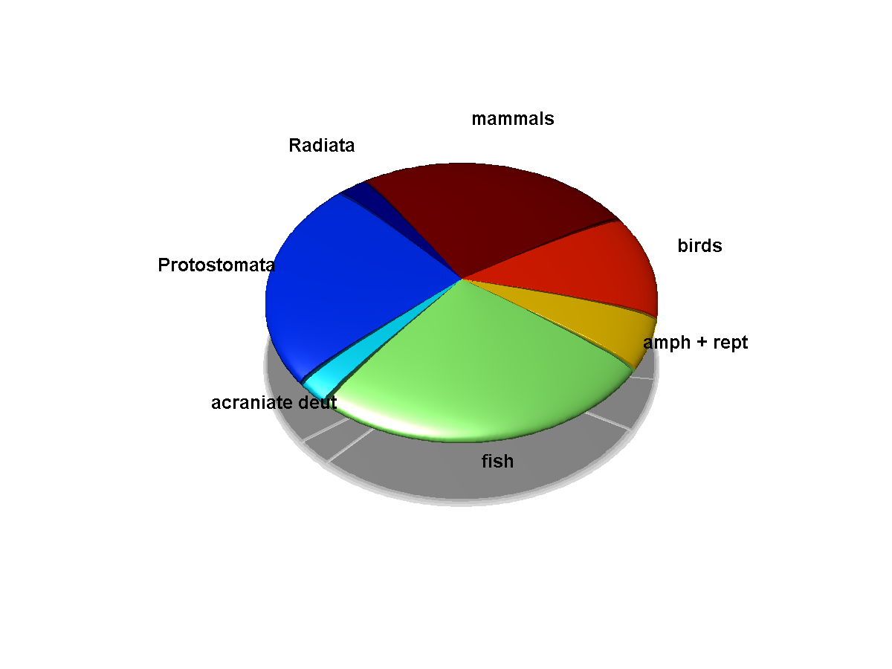

The add-my-pet collection started at 12 Feb 2009 as part of the
DEB tele course 2009.
The numbers of entries have been steadily increasing ever since, as can be seen on this image.
The relationship between the mean relative error and data completeness.
Overview of the collection

The collection is complete for large phyla (perhaps excluding the sponges) and for Chordate orders (excluding some deepwater rayfinned fish and marsupial moles) and Primate families.
Goto the treeview of the collection